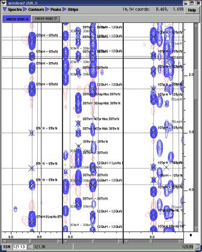
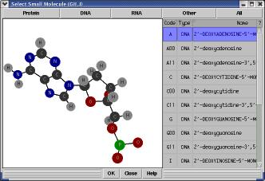
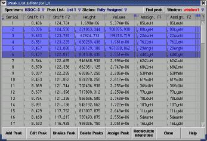
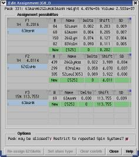
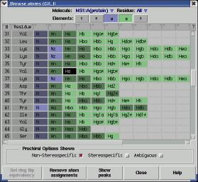
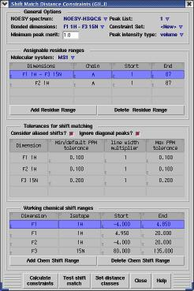
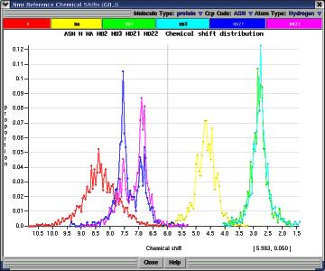

| CcpNmr Analysis Documentation | ||||||||||||||||||||||||||||||||||||
|
Core concepts:index |
|||||||||||||||||||||||||||||||||||
| If you've not seen this documentation before you may want to know what it's all about, so here are some highlights of the CcpNmr Analysis software. Windows
 An Analysis project may contain an almost limitless number of spectrum windows. The windows are are inherently N-dimensional with scrollbars for not only the screen dimensions but also for orthogonal planes, with the ability to select any plane thickness. A window can be divided into several strips for easy comparison of different regions of spectra. Many spectra may be superimposed in the same window where their contours and peaks are readily toggled on or off. Navigation is achieved by using the mouse or keyboard and there are inbuilt navigation functions to easily find orthogonal planes and return-peak positions. Many functions may be applied to crosspeaks directly from the window menu. For example peaks may be assigned, deleted, unaliased and shift matched. Several of these functions can be used on several peaks at once to improve user efficiency. For example, columns of NOE peaks derived from the same amide resonances may be assigned to this amide at the same time. Molecules
 Polymer chains and small molecules are readily put into NMR projects. Sequences may be imported or entered and from this Analysis will build the molecules with all of their NMR assignable atoms. Many molecules of different types can be included and may be connected together into chains. For example, a GIP-anchored glycoprotein may be constructed by joining protein, sugar and lipid components. By using data provided by the MSD at the EBI, CcpNmr software has access to a large number small molecule templates - those that have appeared in PDB structures. Tables
 Virtually all of the information within a project is available to the user via a graphical interface (and a Python shell should you be brave enough to use it) and much of the commonly used information is presented in tabular form. These tables are used to display peak lists, chemical shifts, constraints, coordinates, spectrum configuration and the like. To allow the user to change information (peak position, contour colour, experiment name to name only a few...) they often have editable columns. The rows of the table may be sorted on any of the column types, may be filtered according to a search expression and may be selected (often several at once) to apply specific functions. Also, the data in a table may be exported to a text file, output as PostScript and if numerical may be plotted in a graph. Assignment

 Assignment in CcpNmr software is a two-step process proceeding via an intermediate Resonance object. This allows the user to represent anonymous but connected assignment states, and allows atomic assignment to be made to several peaks at once. Most crosspeak assignment is made by the user choosing a resonance (which need not be assigned to specific atoms) from a curated/ranked list. The choice is made with a single click (and is readily reversible) from a list of possibilities that are close in chemical shift. Structural information can also be used in assignment. Here hydrogen resonances may be ranked according to their distance in an intermediate structure. Assignment of resonances to specific atoms is achieved through scrollable lists. This needs to only be done once for each resonance as all peaks which correspond to the same resonance will automatically share the atom information. A resonance may be assigned, where appropriate, in a stereospecific or non-stereospecific manner. For example, it is possible to say that two peaks represent two different hydrogen beta atoms in a residue, with different chemical shifts, but without necessarily specifying the stereochemical arrangement of the two atoms. Structure constraints
 Analysis can be used to generate distance constraints for structure generation. Currently this uses (fully configurable) lookup tables for obtaining distance values from peak intensities. Constraints may be generated from assigned NOESY peaks, or may be created by performing shift matching on unassigned peaks. The potentially ambiguous constraints thus output may then be used by programs such as ARIA. The violations that result from a structure generation cycle may be imported into Analysis, from where the user can readily follow a link to the peaks which were used in the generation of the violated constraint. Reference information
 All the CcpNmr programs have access to a library of reference information. This includes chemical compound descriptions, chemical shift distributions, isotope information, idealised residue coordinates etc. This is often used implicitly within Analysis, so that the user doesn't have to worry about how to get hold of such information. Some of the data is visualised where it can be helpful. For example, chemical shift distributions during assignment. |
||||||||||||||||||||||||||||||||||||